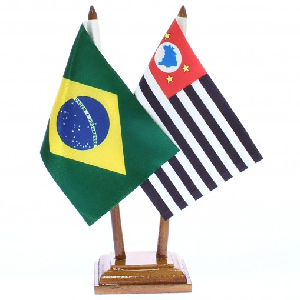

About Me
My name is Rafael. I was born and in São Paulo Brasil with my family. I am currently working as a Solution Architect at Salesforce for Marketing Cloud Platforms. I have three kids, two girls an a boy, and I practice BJJ with Him.
São Paulo, Brasil
São Paulo is the largest city in Brazil and Latin America, and one of the largest in the world. Located in the Southeast region, it serves as Brazil's main financial, corporate, and commercial center.
About São Paulo:
1. Population and Cultural Diversity The city has around 12 million residents and boasts remarkable cultural diversity due to decades of immigration from Italians, Japanese, Portuguese, Syrians, Lebanese, and others. This makes São Paulo a vibrant mosaic of cultures and influences.
2. Economy São Paulo is Brazil’s economic engine, contributing about 10% of the national GDP. The city is a hub for various industries, from technology to finance, commerce, and fashion.
3. Culture and Tourism Known for its cultural richness, São Paulo has world-class museums, theaters, and music venues. The São Paulo Art Museum (MASP) and Ibirapuera Park are just two of many popular attractions.
4. Challenges Like other major cities, São Paulo faces challenges such as traffic congestion, pollution, and social inequality. However, ongoing initiatives aim to improve urban mobility, environmental sustainability, and quality of life.
5. Influence in Brazil and Globally As a cosmopolitan city, São Paulo plays a major role in shaping trends across Brazil and has a strong influence on international business and culture in Latin America.